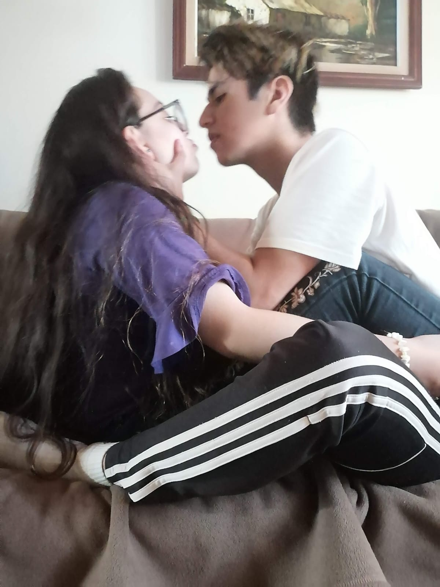

❤️ Nuestra Historia ❤️
✨ESPERO QUE TE GUSTE✨
💫 Nuestro Primer Encuentro 💫
👫🻠Conociéndonos 👫ğŸ»
👩🏻‍❤️‍👨🏻 "1° Salida" 👩🏻‍❤️‍👨🏻
😷 Pandemia 😷
🤫 Cuchicheo 🤫

💠Conexión ğŸ’
👩🏻‍❤️‍👨🏻 "2° Salida" 👩🏻‍❤️‍👨🏻
🤠CompañÃa ğŸ¤
🛡️ Tu Seguridad 🛡️
🦦 Paseo 🦦
👧🻠1° Encuentro 👧ğŸ»
🤓 Extravagancia 🤓
🏐 Apoyo 🏐
🚌 1° Salida Solos 🚌
🛡️ Decisión 🛡️
⛰️ DesafÃo ⛰️